9 Calibrating Interval Estimates using the Bootstrap
Review
Point and Interval Estimation
$$ \newcommand{X}{} \newcommand{Y}{}
$$
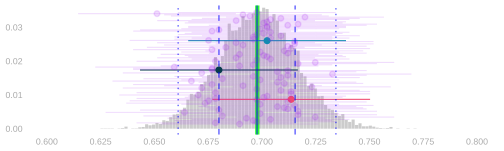
- In last week, we talked about estimating population frequencies.
- Our point estimates were frequencies in a random sample drawn from the population.
- To characterize our uncertaintly, we used interval estimates.
- In particular, calibrated interval estimates. Confidence intervals.
- To get these intervals, we add ‘arms’ of equal length to our point estimate.
- We choose the arm length so that, in 95% of surveys done like ours, the estimation target is within them.
- In particular, calibrated interval estimates. Confidence intervals.
Calibration of Interval Estimates
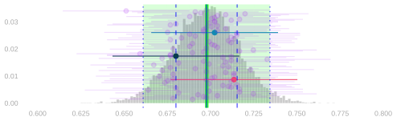
- We can do that using the sampling distribution of our point estimate.
- We’d draw arms out from the sampling distribution’s until they span 95% of point estimates.
- We can see that this is the right length by a shift of perspective.
- A point estimate can touch the mean with its arms iff1 the mean can touch it with equally long arms.
- So 95% of intervals cover if and only if 95% of point estimates are within the mean’s arms.
- In practice, we can’t do exactly that. We don’t know the sampling distribution.
- But we can use an estimate of the sampling distribution in its place.
- If it’s a good one, we’ll get approximately 95% coverage.
A Parametric Estimate of the Sampling Distribution
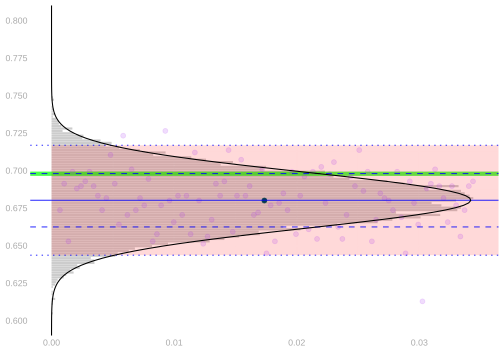
- Our estimate was based on knowledge of the parametric form of the sampling distribution.
- When we sample with replacement, it’s binomial.
- It’s the distribution of the frequency of heads in 625 flips of a coin with probability \(\theta\)
- where \(\theta\) is the ‘frequency of heads’ in the population.
- e.g. \(\theta\approx 0.70\) is the proportion of registered voters who will vote in our turnout example.
\[ P_\theta(\hat\theta = t) = \binom{n}{nt} \theta^{nt} (1-\theta)^{n(1-t)} \qqtext{ is the probability of the sample frequency being $t$} \]
- By parametric form, I mean a formula in terms of some parameters.
- That tells us what parameters we need to estimate to estimate the sampling distribution.
- In this case, the only (unknown) parameter is the \(\theta\), the frequency of heads in the population.
- We plugged in the sample frequency, \(\hat\theta\), to get our estimate of the sampling distribution.
\[ \hat P_\theta(\hat\theta = t) = \binom{n}{nt} \hat\theta^{nt} (1-\hat\theta)^{n(1-t)} \qqtext{ is our estimate of the same thing} \]
Sampling without Replacement
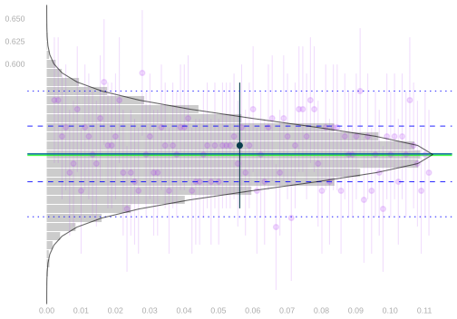
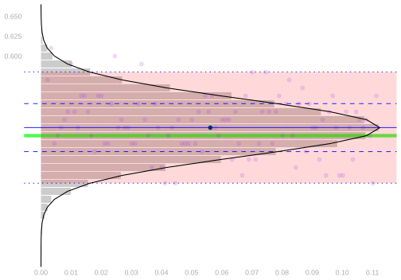
- We can do the same thing when we sample without replacement.
- We just have to use a different parametric form: the hypergeometric distribution.
\[ P_\theta(\hat\theta = t) = \binom{n}{nt} \frac{\{m(1-\theta)\}!}{\{m(1-\theta)-n(1-t)\}!} \times \frac{(m\theta)!}{(m\theta-nt)!} \times \frac{(m-n)!}{m!} \]
- Again, the only unknown parameter is \(\theta\). And we can plug in our point estimate to estimate this distribution.
\[ \hat P_\theta(\hat\theta = t) = \binom{n}{nt} \frac{\{m(1-\hat\theta)\}!}{\{m(1-\hat\theta)-n(1-t)\}!} \times \frac{(m\hat\theta)!}{(m\hat\theta-nt)!} \times \frac{(m-n)!}{m!} \]
An Exercise
A Survey
- We’re going to run a survey on Candy Preferences.
- I’ll draw a sample of size \(n=6\), with replacement, from the people in the room.
- They’ll pick candy and write their selection into a sample table on the board.
- In particular, we’ll write out whether they chose Chocolate (\(Y=1\)) or sour candy (\(Y=0\)).
- Then we’re going to estimate the sampling distribution in a new way.
- It’ll be a lot like calculating the actual sampling distribution.
- We’ll draw a sample of size \(n\) with replacement, use it to calculate our estimator, and repeat.
- What’s different is the population we’re drawing our sample from.
- We don’t have responses from the whole population, so we’ll draw it from the closest thing we’ve got: the sample.
- We call this bootstrapping.
- The estimate of the sampling distribution we get is called the bootstrap sampling distribution.
- I’ve drawn the sample we got from our survey on the board.
- Here’s how you draw a sample from the bootstrap sampling distribution of our point estimator.
- Roll your die 6 times to draw a sample of size \(n=6\) from the sample.
- Calculate the sample frequency. That’s one draw from the bootstrap sampling distribution. Write it down.
- If we all do this 5 times, we’ll have a bunch of draws.
- We’ll tally them up on the board and visualize the result as a histogram.
- A histogram of draws from the bootstrap sampling distribution.
Simulating a Few More Draws
Discussion
- If all has gone to plan, our histogram looks a lot like our binomial estimate of the sampling distribition.
- If we substitute in a computer tally of 10,000 draws from the bootstrap sampling distribution, we nail it.
- It looks like the bootstrap sampling distribution is the binomial estimate.
- Q. It is. How do you know?
- We know the distribution of the frequency of 1s in a sample of size \(n\) drawn with replacement …
- … from a population \(y_1\ldots y_m\) of binary responses with frequency \(\theta\).
- It’s \(\text{Binomial}(n, \theta)\). To estimate it, we plug in \(\hat\theta\), the frequency of 1s in our sample.
- So our Binomial estimate is the distribution of the frequency of 1s in a sample of size \(n\) drawn with replacement …
- … from ‘a population’ \(Y_1 \ldots Y_n\) with frequency \(\hat\theta\).
- What’s a draw from the bootstrap sampling distribution?
- Each bootstrap sample is the frequency of 1s in a sample of size \(n\) drawn with replacement …
- … from ‘a population’ \(Y_1 \ldots Y_n\) in which the frequency of 1s is \(\hat\theta\), the frequency of 1s in our sample.
- Because that ‘population’ is our sample.
The Bootstrap
The Bootstrap Interpretation in Our Turnout Poll

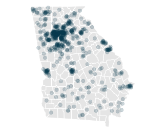
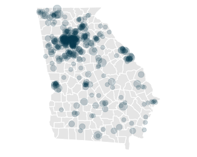
- The sampling distribution estimate we’ve used was \(\text{Binomial}(n,\hat\theta)\) for \(n=625\) and \(\hat\theta \approx 0.68\).
- It’s the distribution of the proportion heads in 625 flips of a coin with probability \(\hat\theta \approx 0.68\) of heads.
- where \(\hat\theta \approx 0.68\) is the proportion of voters we’ve polled who will vote.
- That is, it’s the sampling distribution of a ‘poll’ of the people in our sample, i.e.
- roll a 625-sided die 625 times
- call up the corresponding person in our sample
- and counting up the yeses we hear
- Note that this is random because we’re drawing with replacement.
- Each time we run this poll, we call each person in our sample 0,1,2,… times
- And the number of times we call them is random.
- If we plot our voters on a map, you can see the idea in visual terms.
- On the left, we have the population.
- In the middle, we have our sample. It’s drawn, with replacement, from the population.
- On the right, we have something else. A new sample drawn, with replacement, from the sample.
- Each ‘call’ that a person receives increases the size of their dot: \(\text{circle area} \propto \text{number of calls}\).
- In the sample, even though it’s drawn with replacement, all dots are the same size.
- Because we draw from such a large population, nobody gets called twice.
- In the bootstrap sample, dots vary in size.
- Because we draw \(n\) people from a sample of size \(n\), it’s almost impossible not to call somebody twice.
Bootstrapping
- Before the election, we don’t observe the population. But we do observe the sample.
- And we can sample from the sample act as if it were the population.
- We’ll take repeated random samples of size 625, with replacement, from our sample of size 625.
- We call these bootstrap samples and estimates based on them bootstrap estimates.
- The distribution of these estimates is called the bootstrap sampling distribution.
- If the sample is like the population, this should be like our estimator’s actual sampling distribution.
The Sample \[ \begin{array}{r|rrrr|r} i & 1 & 2 & \dots & 625 & \bar{Y}_{625} \\ Y_i & 1 & 1 & \dots & 1 & 0.68 \\ \end{array} \]
The Bootstrap Sample
\[ \begin{array}{r|rrrr|r} i & 1 & 2 & \dots & 625 & \bar{Y}_{625}^* \\ Y_i^* & 1 & 1 & \dots & 1 & 0.63 \\ \end{array} \]
The Population
\[ \begin{array}{r|rrrr|r} j & 1 & 2 & \dots & 7.23M & \bar{y}_{7.23M} \\ y_{j} & 1 & 1 & \dots & 1 & 0.70 \\ \end{array} \]
The ‘Bootstrap Population’ — The Sample \[ \begin{array}{r|rrrr|r} j & 1 & 2 & \dots & 625 & \bar{y}^*_{625} \\ y_j^* & 1 & 1 & \dots & 1 & 0.68 \\ \end{array} \]
Notation. We use stars to distinguish the bootstrap sample from our original sample—we write \(Y_i^*\) and \(\bar Y^*\).
The Bootstrap is Nonparametric
bootstrap.samples = array(dim=10000)
for(rr in 1:10000) {
Y.star = Y[sample(1:n, n, replace=TRUE)]
bootstrap.samples[rr] = mean(Y.star)
}
- We do not need to know the parametric form of our sampling distribution to use it.
- All we do is re-run our poll acting as if our sample were the population.
- We can do this no matter what we’re estimating.
- So let’s try it out on some stuff where we don’t know the parametric form.
Comparing Black and Non-Black Turnout
\[ \small{ \begin{array}{r|rr|rr|r|rr|rrrrr} \text{call} & 1 & & 2 & & \dots & 625 & & & & & & \\ \text{question} & X_1 & Y_1 & X_2 & Y_2 & \dots & X_{625} & Y_{625} & \overline{X}_{625} & \overline{Y}_{625} &\frac{\sum_{i:X_i=0} Y_i}{\sum_{i:X_i=0} 1} & \frac{\sum_{i:X_i=1} Y_i}{\sum_{i:X_i=1} 1} & \text{difference} \\ \text{outcome} & \underset{\textcolor{gray}{x_{869369}}}{0} & \underset{\textcolor{gray}{y_{869369}}}{1} & \underset{\textcolor{gray}{x_{4428455}}}{1} & \underset{\textcolor{gray}{y_{4428455}}}{1} & \dots & \underset{\textcolor{gray}{x_{1268868}}}{0} & \underset{\textcolor{gray}{y_{1268868}}}{1} & 0.28 & 0.68 & 0.68 & 0.69 & 0.01 \\ \end{array} } \]
- It’s useful to predict turnout among Black voters because they tend to vote differently than non-Black voters.
- Let’s suppose that we’re interested in the difference in turnout between Black and non-Black voters.
- This is a bit reductive, but it’s the beginning of the semester, so we’re keeping things simple.
- We know from the voter file that 30% of registered voters are Black.
- Let’s suppose we asked the people we polled if they were Black, recording their answer in a covariate \(X_i\).
- And we found that…
- 172 of the people we called (28%) were Black with a turnout rate of 0.69
- 453 of the people we called (72%) were non-Black with a turnout rate of 0.68
- So we’d estimate the difference to be \(0.69-0.68 \approx 0.01\).
- After the election, we found that …
- Turnout among Black registered voters was 0.74
- Turnout among non-Black registered voters was 0.68.
- The actual difference was \(0.74-0.68 \approx 0.06\).
- Depending on what you’re doing, that point estimate of 0.01 may or may not have been accurate enough.
- It would’ve been nice to have a confidence interval to tell us what kind of precision we could expect.
- For that, we’ll need to estimate the sampling distribution of this difference.
A Table of Imaginary Polls
$$ \[\begin{array}{r|rr|rr|r|rr|rrrr} \text{call} & 1 & & 2 & & \dots & 625 & & & & & & \\ \text{poll} & X_1 & Y_1 & X_2 & Y_2 & \dots & X_{625} & Y_{625} & \overline{X} & \overline{Y} &\frac{\sum_{i:X_i=0} Y_i}{\sum_{i:X_i=0} 1} & \frac{\sum_{i:X_i=1} Y_i}{\sum_{i:X_i=1} 1} & \text{difference} \\ \hline \color[RGB]{7,59,76}1 & \color[RGB]{7,59,76}0 & \color[RGB]{7,59,76}1 & \color[RGB]{7,59,76}1 & \color[RGB]{7,59,76}1 & \color[RGB]{7,59,76}\dots & \color[RGB]{7,59,76}0 & \color[RGB]{7,59,76}1 & \color[RGB]{7,59,76}0.28 & \color[RGB]{7,59,76}0.68 & \color[RGB]{7,59,76}0.68 & \color[RGB]{7,59,76}0.69 & \color[RGB]{7,59,76}0.01 \\ \color[RGB]{239,71,111}1 & \color[RGB]{239,71,111}1 & \color[RGB]{239,71,111}0 & \color[RGB]{239,71,111}0 & \color[RGB]{239,71,111}1 & \color[RGB]{239,71,111}\dots & \color[RGB]{239,71,111}0 & \color[RGB]{239,71,111}1 & \color[RGB]{239,71,111}0.29 & \color[RGB]{239,71,111}0.71 & \color[RGB]{239,71,111}0.72 & \color[RGB]{239,71,111}0.70 & \color[RGB]{239,71,111}-0.01 \\ \color[RGB]{17,138,178}1 & \color[RGB]{17,138,178}1 & \color[RGB]{17,138,178}1 & \color[RGB]{17,138,178}0 & \color[RGB]{17,138,178}1 & \color[RGB]{17,138,178}\dots & \color[RGB]{17,138,178}0 & \color[RGB]{17,138,178}1 & \color[RGB]{17,138,178}0.26 & \color[RGB]{17,138,178}0.70 & \color[RGB]{17,138,178}0.68 & \color[RGB]{17,138,178}0.76 & \color[RGB]{17,138,178}0.08 \\ \vdots & \vdots & \vdots & \vdots & \vdots & \vdots & \vdots & \vdots & \vdots & \vdots & \vdots & \vdots & \vdots \\ \color[RGB]{6,214,160}1 & \color[RGB]{6,214,160}0 & \color[RGB]{6,214,160}1 & \color[RGB]{6,214,160}0 & \color[RGB]{6,214,160}1 & \color[RGB]{6,214,160}\dots & \color[RGB]{6,214,160}0 & \color[RGB]{6,214,160}1 & \color[RGB]{6,214,160}0.30 & \color[RGB]{6,214,160}0.71 & \color[RGB]{6,214,160}0.68 & \color[RGB]{6,214,160}0.79 & \color[RGB]{6,214,160}0.12 \\ \end{array}\]$$
The Sampling Distribution
difference.samples = array(dim=10000)
for(rr in 1:10000) {
I = sample(1:m, n, replace=TRUE)
X = x[I]
Y = y[I]
difference.samples[rr] = mean(Y[X==1]) - mean(Y[X==0])
}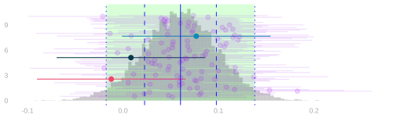
- Here’s what the sampling distribution of this difference in turnout looks like.
- As before, if we can estimate it we can use that estimate to get a 95% confidence interval.
- But, unlike before, we don’t really know the parametric form of its sampling distribution.
- Or—at least—it’d be a pain to work it out. So we’ll use the bootstrap to estimate it.
Making a Table of Bootstrap Polls


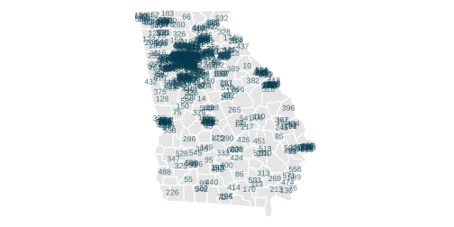
\[ \small{ \begin{array}{r|rr|rr|r|rr|rrrr} \text{call} & 1 & & 2 & & \dots & 625 & & & & & & \\ \text{poll} & X_1 & Y_1 & X_2 & Y_2 & \dots & X_{625} & Y_{625} & \overline{X} & \overline{Y} &\frac{\sum_{i:X_i=0} Y_i}{\sum_{i:X_i=0} 1} & \frac{\sum_{i:X_i=1} Y_i}{\sum_{i:X_i=1} 1} & \text{difference} \\ \hline \color[RGB]{7,59,76}1 & \color[RGB]{7,59,76}0 & \color[RGB]{7,59,76}1 & \color[RGB]{7,59,76}1 & \color[RGB]{7,59,76}1 & \color[RGB]{7,59,76}\dots & \color[RGB]{7,59,76}0 & \color[RGB]{7,59,76}1 & \color[RGB]{7,59,76}0.28 & \color[RGB]{7,59,76}0.68 & \color[RGB]{7,59,76}0.68 & 0.69 & \color[RGB]{7,59,76}0.01 \end{array} } \]
\[ \small{ \begin{array}{r|rr|rr|r|rr|rrrr} \text{`call'} & 1 & & 2 & & \dots & 625 & & & & & & \\ \text{`poll'} & X_1^* & Y_1^* & X_2^* & Y_2^* & \dots & X^*_{625} & Y^*_{625} & \overline{X}^* & \overline{Y}^* &\frac{\sum_{i:X_i^*=0} Y_i^*}{\sum_{i:X_i^*=0} 1} & \frac{\sum_{i:X_i^*=1} Y_i^*}{\sum_{i:X_i^*=1} 1} & \text{difference} \\ \hline \color[RGB]{239,71,111}1 & \color[RGB]{239,71,111}X_{398} & \color[RGB]{239,71,111}Y_{398} & & & \color[RGB]{239,71,111}\dots & & & & & & & & \\ & \color[RGB]{239,71,111}1 & \color[RGB]{239,71,111}0 & & & \color[RGB]{239,71,111}\dots & & & & & & & & \\ \color[RGB]{17,138,178}2 & \color[RGB]{17,138,178}X_{293} & \color[RGB]{17,138,178}Y_{293} & & & \color[RGB]{17,138,178}\dots & & & & & & & & \\ & \color[RGB]{17,138,178}0 & \color[RGB]{17,138,178}1 & & & \color[RGB]{17,138,178}\dots & & & & & & & & \\ \color[RGB]{6,214,160}3 & \color[RGB]{6,214,160}X_{281} & \color[RGB]{6,214,160}Y_{281} & & & \color[RGB]{6,214,160}\dots & & & & & & & & \\ & \color[RGB]{6,214,160}0 & \color[RGB]{6,214,160}0 & & & \color[RGB]{6,214,160}\dots & & & & & & & & \\ \end{array} } \]
A Completed Table of Bootstrap Polls
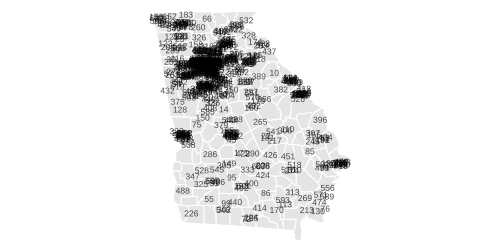
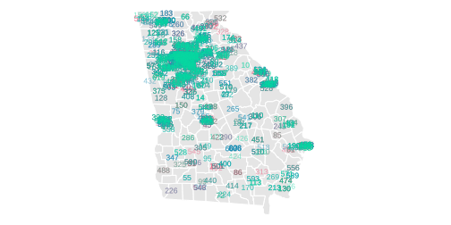
\[ \small{ \begin{array}{r|rr|rr|r|rr|rrrr} \text{call} & 1 & & 2 & & \dots & 625 & & & & & & \\ \text{poll} & X_1 & Y_1 & X_2 & Y_2 & \dots & X_{625} & Y_{625} & \overline{X} & \overline{Y} &\frac{\sum_{i:X_i=0} Y_i}{\sum_{i:X_i=0} 1} & \frac{\sum_{i:X_i=1} Y_i}{\sum_{i:X_i=1} 1} & \text{difference} \\ \hline \color[RGB]{7,59,76}1 & \color[RGB]{7,59,76}0 & \color[RGB]{7,59,76}1 & \color[RGB]{7,59,76}1 & \color[RGB]{7,59,76}1 & \color[RGB]{7,59,76}\dots & \color[RGB]{7,59,76}0 & \color[RGB]{7,59,76}1 & \color[RGB]{7,59,76}0.28 & \color[RGB]{7,59,76}0.68 & \color[RGB]{7,59,76}0.68 & 0.69 & \color[RGB]{7,59,76}0.01 \end{array} } \]
\[ \small{ \begin{array}{r|rr|rr|r|rr|rrrr} \text{`call'} & 1 & & 2 & & \dots & 625 & & & & & & \\ \text{`poll'} & X_1^* & Y_1^* & X_2^* & Y_2^* & \dots & X^*_{625} & Y^*_{625} & \overline{X}^* & \overline{Y}^* &\frac{\sum_{i:X_i^*=0} Y_i^*}{\sum_{i:X_i^*=0} 1} & \frac{\sum_{i:X_i^*=1} Y_i^*}{\sum_{i:X_i^*=1} 1} & \text{difference} \\ \hline \color[RGB]{239,71,111}2 & \color[RGB]{239,71,111}X_{398} & \color[RGB]{239,71,111}Y_{398} & \color[RGB]{239,71,111}X_{129} & \color[RGB]{239,71,111}Y_{129} & \color[RGB]{239,71,111}\dots & \color[RGB]{239,71,111}X_{232} & \color[RGB]{239,71,111}Y_{232} & & & & & & \\ & \color[RGB]{239,71,111}1 & \color[RGB]{239,71,111}0 & \color[RGB]{239,71,111}1 & \color[RGB]{239,71,111}1 & \color[RGB]{239,71,111}\dots & \color[RGB]{239,71,111}0 & \color[RGB]{239,71,111}1 & \color[RGB]{239,71,111}0.29 & \color[RGB]{239,71,111}0.68 & \color[RGB]{239,71,111}0.69 & \color[RGB]{239,71,111}0.68 & \color[RGB]{239,71,111}-0.01 \\ \color[RGB]{17,138,178}2 & \color[RGB]{17,138,178}X_{293} & \color[RGB]{17,138,178}Y_{293} & \color[RGB]{17,138,178}X_{526} & \color[RGB]{17,138,178}Y_{526} & \color[RGB]{17,138,178}\dots & \color[RGB]{17,138,178}X_{578} & \color[RGB]{17,138,178}Y_{578} & & & & & & \\ & \color[RGB]{17,138,178}0 & \color[RGB]{17,138,178}1 & \color[RGB]{17,138,178}0 & \color[RGB]{17,138,178}1 & \color[RGB]{17,138,178}\dots & \color[RGB]{17,138,178}0 & \color[RGB]{17,138,178}1 & \color[RGB]{17,138,178}0.28 & \color[RGB]{17,138,178}0.65 & \color[RGB]{17,138,178}0.64 & \color[RGB]{17,138,178}0.67 & \color[RGB]{17,138,178}0.03 \\ \color[RGB]{6,214,160}1M & \color[RGB]{6,214,160}X_{281} & \color[RGB]{6,214,160}Y_{281} & \color[RGB]{6,214,160}X_{520} & \color[RGB]{6,214,160}Y_{520} & \color[RGB]{6,214,160}\dots & \color[RGB]{6,214,160}X_{363} & \color[RGB]{6,214,160}Y_{363} & & & & & & \\ & \color[RGB]{6,214,160}0 & \color[RGB]{6,214,160}0 & \color[RGB]{6,214,160}0 & \color[RGB]{6,214,160}1 & \color[RGB]{6,214,160}\dots & \color[RGB]{6,214,160}0 & \color[RGB]{6,214,160}1 & \color[RGB]{6,214,160}0.28 & \color[RGB]{6,214,160}0.68 & \color[RGB]{6,214,160}0.66 & \color[RGB]{6,214,160}0.71 & \color[RGB]{6,214,160}0.05 \\ \end{array} } \]
The Difference’s Bootstrap Sampling Distribution
difference.bootstrap.samples = array(dim=10000)
for(rr in 1:10000) {
I = sample(1:n, n, replace=TRUE)
Xstar = X[I]
Ystar = Y[I]
difference.bootstrap.samples[rr] = mean(Ystar[Xstar==1]) - mean(Ystar[Xstar==0])
}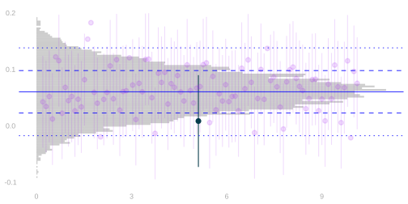
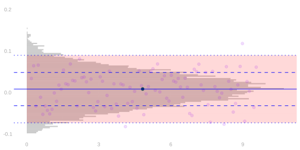
- It looks like it works in this case.
- But we’re no longer able to argue that it should work the way we did before.
- For that, we took advantage of our knowledge of our estimator’s parametric form.
- And we don’t have that now.
- We’ll get there. But we’ll need a few new tools we’ll develop in the coming weeks.
- Normal approximation—a parametric form for an approximation to our estimator’s sampling distribution.
- Techniques for variance calculation. This’ll help us understand the parameters that go into it.
if and only if↩︎